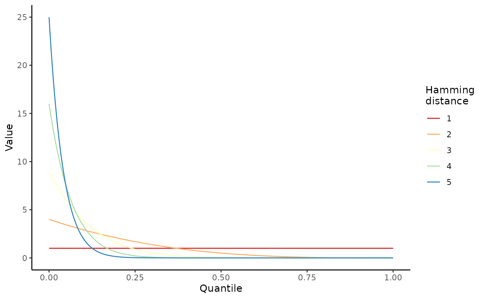

Simulate within-host evolution with `wavess`
run_wavess.Rmdwavess is a agent-based discrete-time within-host evolution simulator. We assume that all virus life cycles within the infection are synchronized into generations. Each generation is one full virus life cycle, from infecting a cell to exiting the cell.
In this vignette, we focus on how to simulate within-host evolution
using the run_wavess() function. We will be using the HIV
ENV gp120 gene as an example. Please note that the default arguments
were set with this particular organism and genomic region in mind. If
you’d like to simulate something else, you may have to modify certain
parameters. However, if you are interested in this gene in particular,
you can probably use most of the defaults including the founder and
reference sequences provided as examples.
A note about using the simulation output
Before we get started, I just want to note that the output of these
simulations is stochastic, meaning they will be different each time it
is run. You can set a seed for reproducibility and troubleshooting if
you’d like, but for the vast majority of applications, you will want to
run many replicates of a given simulation scenario with different seeds
(random is okay) to get a reasonable sense of what dynamics are
observed. You will also want to check the simulation outputs to see if
they are giving you reasonable/expected results that conform to your
prior knowledge about the system you’re simulating. If the output does
not seem right, you might have to tweak the input parameters to work for
your particular system. We go into more detail about analyzing the model
output in a separate vignette (see
vignette("analyze_output")).
Load libraries
First, we have to load the wavess library and a few additional libraries that we’ll use for this vignette:
library(wavess)
library(ape)
library(dplyr)
#>
#> Attaching package: 'dplyr'
#> The following object is masked from 'package:ape':
#>
#> where
#> The following objects are masked from 'package:stats':
#>
#> filter, lag
#> The following objects are masked from 'package:base':
#>
#> intersect, setdiff, setequal, union
library(ggplot2)Create Python virtual environment
Next, we must create a Python virtual environment. The virtual
environment is required because the underlying code of
run_wavess() is written in Python. You only have to create
the virtual environment once on each machine.
create_python_venv()
#> Warning in create_python_venv(): Skipped installation of the following
#> packages: scipy Use `force` to force installation or update.Prepare input data
Next, we must generate the input data. If you’re interested in
learning more about how to prepare the input data, please see the
corresponding vignette (see
vignette("prepare_input_data")).
We will only simulate 300 generations with sampling every 100 generations so the simulation doesn’t take too long to run.
pop <- define_growth_curve(n_gens = 300)
samp <- define_sampling_scheme(sampling_frequency_active = 100, sampling_frequency_latent = 100) %>% filter(day <= 300)
founder_ref <- extract_seqs(hxb2_cons_founder,
founder = "B.US.2011.DEMB11US006.KC473833",
ref = "CON_B(1295)",
start = 6225, end = 7787
)
gp120 <- slice_aln(hxb2_cons_founder, 6225, 7787)
epi_probs <- get_epitope_frequencies(env_features$Position)
ref_founder_map <- map_ref_founder(gp120,
ref = "B.FR.83.HXB2_LAI_IIIB_BRU.K03455",
founder = "B.US.2011.DEMB11US006.KC473833"
)
epitope_locations <- sample_epitopes(epi_probs,
ref_founder_map = ref_founder_map
)
#> 16 resamples requiredSimplest way to run_wavess()
The simplest way to simulate within-host evolution is to use all of the defaults, and only input the population growth and sampling scheme, founder sequence, and nucleotide substitution probabilities.
Please note that the total population size simulated greatly influences the simulation output.
required_args_only <- run_wavess(
inf_pop_size = pop,
samp_scheme = samp,
founder_seqs = rep(founder_ref$founder, 10)
)Here, we simulate one founder sequence. You may simulate more, but
you will have to ensure that they are the same length, do not include
gaps, and are codon-aligned. You will also have to modify the input
growth curve to start with the correct number of cells. See
vignette('prepare_input_data') for more details.
The output format of run_wavess() is a list of length
four containing a tibble of various counts, the fitness of the sampled
viruses, and the DNA sequences of the sampled viruses from the active
and latent reservoir:
names(required_args_only)
#> [1] "counts" "fitness" "seqs_active" "seqs_latent"Note that, if no latent cells are sampled, then the length of the list will be three instead, with no sequences from latent cells.
The counts tibble contains the following columns:
-
generation: generation that number of events was recorded and sequences were sampled -
active_cell_count: active cell count -
latent_cell_count: latent cell count -
active_turned_latent: number of active cells that became latent -
latent_turned_active: number of latent cells that became active -
latent_died: number of latent cells that died -
latent_proliferated: number of latent cells that proliferated -
number_mutations: number of mutations across all sequences -
number_recombinations: number of infected cells with at least one recombination event -
mean_fitness_active: mean fitness of active cells -
mean_conserved_active: mean conserved sites fitness of active cells -
mean_immune_active: mean immune fitness of active cells -
mean_replicative_active: mean replicative fitness (comparison toref_seq) of active cells
required_args_only$counts
#> # A tibble: 4 × 13
#> generation active_cell_count latent_cell_count active_turned_latent
#> <int> <int> <int> <int>
#> 1 0 10 0 0
#> 2 100 2000 116 2
#> 3 200 2000 145 2
#> 4 300 2000 178 2
#> # ℹ 9 more variables: latent_turned_active <int>, latent_died <int>,
#> # latent_proliferated <int>, number_mutations <int>,
#> # number_recombinations <int>, mean_fitness_active <dbl>,
#> # mean_conserved_active <dbl>, mean_immune_active <dbl>,
#> # mean_replicative_active <dbl>As you can see, the default values for run_wavess()
include latency, mutations, and dual infections (which lead to
recombination), but no fitness costs.
The fitness tibble contains a row for each sampled sequence (all from the active pool) and the following columns:
-
generation: generation that the virus was sampled in -
seq_id: sequence id (corresponds to the sequence name below). Note that the same value for different generations does not say anything about the ancestral relationship between the viruses. -
immune: virus immune fitness -
conserved: virus conserved fitness -
replicative: virus replicative fitness (compared to a reference) -
overall: overall fitness (the other three multiplied together)
required_args_only$fitness
#> # A tibble: 80 × 6
#> generation seq_id immune conserved replicative overall
#> <chr> <chr> <dbl> <dbl> <dbl> <dbl>
#> 1 founder founder0 1 1 1 1
#> 2 founder founder1 1 1 1 1
#> 3 founder founder2 1 1 1 1
#> 4 founder founder3 1 1 1 1
#> 5 founder founder4 1 1 1 1
#> 6 founder founder5 1 1 1 1
#> 7 founder founder6 1 1 1 1
#> 8 founder founder7 1 1 1 1
#> 9 founder founder8 1 1 1 1
#> 10 founder founder9 1 1 1 1
#> # ℹ 70 more rowsAgain, the fitness is 1 for everything here because we didn’t model fitness.
The sequences are returned as well, in ape::DNAbin
format:
Sequences from active cells:
required_args_only$seqs_active
#> 80 DNA sequences in binary format stored in a matrix.
#>
#> All sequences of same length: 1503
#>
#> Labels:
#> founder0
#> founder1
#> founder2
#> founder3
#> founder4
#> founder5
#> ...
#>
#> Base composition:
#> a c g t
#> 0.370 0.165 0.222 0.243
#> (Total: 120.24 kb)Sequences from latent cells:
required_args_only$seqs_latent
#> 60 DNA sequences in binary format stored in a matrix.
#>
#> All sequences of same length: 1503
#>
#> Labels:
#> gen100_latent_0
#> gen100_latent_1
#> gen100_latent_2
#> gen100_latent_3
#> gen100_latent_4
#> gen100_latent_5
#> ...
#>
#> Base composition:
#> a c g t
#> 0.370 0.164 0.222 0.243
#> (Total: 90.18 kb)Each sequence is named as follows:
- Founder sequences are named as “founderX” where X is the index of the founder sequence in the input vector (indexed at 0).
- All other sequences are sampled and are named by the generation, whether they were sampled from the active or latent reservoir, and a number. Note again that the same value for different generations does not say anything about the ancestral relationship between the viruses.
These outputs can be plotted and analyzed in various ways. If you’d
like to learn more about how to analyze the output, please check out the
post-processing vignette vignette("analyze_output").
Including selective pressures
run_wavess() can simulate three types of selective
pressure:
- Conserved sites fitness
- Fitness relative to a “most fit” reference sequence
- B-cell immune response
Note that all nucleotide positions related to fitness are expected to
be indexed at 0. Including these requires additional inputs, which are
described in more detail in the prepare input data vignette
(vignette("prepare_input_data")).
Both conserved sites fitness and replicative fitness (comparison to a reference) are modeled using a multiplicative fitness landscape with the equation:
fitness = (1 - cost) ** n_mutThe fitness cost must be between 0 and 1, where 0 indicates no
fitness cost and 1 indicates no ability to survive. n_mut
is the number of mutations in conserved sites or the number of
nucleotides different from the reference sequence.
For additional details on how each of these selective pressures is implemented, please see the manuscript [ADD LINK WHEN WE HAVE IT].
Conserved sites fitness
To simulate conserved sites fitness, you must provide a vector of
sites in the founder sequence that are considered to be conserved
(conserved_sites argument). By default, the cost of a
mutation at these sites is 0.99 (conserved_cost
argument).
Here’s an example of simulating evolution with conserved sites fitness:
conserved_fitness <- run_wavess(
inf_pop_size = pop,
samp_scheme = samp,
founder_seqs = rep(founder_ref$founder, 10),
conserved_sites = founder_conserved_sites,
conserved_cost = 0.99
)If you look at the mean conserved fitness of active cells, you’ll see that it’s not always 1 (although it may sometimes be 1 depending on the simulation, since the output is stochastic).
conserved_fitness$counts$mean_conserved_active
#> [1] 1.000000 1.000000 0.999505 1.000000Comparison to a reference
To simulate fitness compared to a reference, you must provide a “most
fit” reference sequence to compare each simulated sequence to. The
strength of this fitness can be altered using the
replicative_cost argument.
ref_fitness <- run_wavess(
inf_pop_size = pop,
samp_scheme = samp,
founder_seqs = rep(founder_ref$founder, 10),
ref_seq = founder_ref$ref
)Here, you can see that the mean replicative fitness is now less than 1:
ref_fitness$counts$mean_replicative_active
#> [1] 0.8520756 0.8493573 0.8460892 0.8430956Immune fitness
Active immunity can be modeled by defining B-cell epitopes locations
that can be recognized by the immune system. Nucleotide epitopes are
translated into amino acids before immune fitness costs are calculated.
An epitope is recognized only when it is present at least 100 times
across the population (n_for_imm argument). Once an epitope
is recognized, it undergoes affinity maturation for 90 days
(days_full_potency), at which time it reaches full potency.
Epitopes are also cross-reactive.
Cross-reactivity is sampled from a Beta distribution where alpha is 1 and beta is the square of the Hamming distance to the nearest recognized epitope:
lapply(1:5, function(x) {
tibble(
n_muts = factor(x),
quantile = seq(0, 1, 1 / 1000),
val = dbeta(quantile, 1, x^2)
)
}) |>
bind_rows() |>
ggplot(aes(x = quantile, y = val, col = n_muts)) +
geom_line() +
scale_color_brewer(palette = "Spectral") +
theme_classic() +
labs(x = "Quantile", y = "Value", col = "Hamming\ndistance")
immune_fitness <- run_wavess(
inf_pop_size = pop,
samp_scheme = samp,
founder_seqs = rep(founder_ref$founder, 10),
epitope_locations = epitope_locations
)The immune fitness here is now less than 1 after the immune system kicks in:
immune_fitness$counts$mean_immune_active
#> [1] 1.0000000 0.7033000 0.7284700 0.7380817Please note that the model is very sensitive to the maximum immune fitness cost for a given epitope.
Multiple selective pressures at once
You can also include multiple selective pressures at once by using multiple of the arguments described above.
Events defined by rates
There are several events that can occur during within-host evolution
that are defined by rates of occurrence (which are converted into
per-generation probabilities). These include the mutation rate
(mut_rate), the recombination rate
(recomb_rate), and various rates related to latent cell
dynamics (act_to_lat, lat_to_act,
lat_prolif, lat_die). Each of these can be
turned off by setting the respective rate value to 0. The simulation
starts with 0 latent cells, so setting act_to_lat will turn
latent cell dynamics off.